LSTM¶
RNNCELL¶

RNNCELL，可以理解为 单步 的迭代
因为所有的循环神经网络 都是有很多步去迭代，最终把每一步的状态 取出来作为输出
这里的RNNCELL，也就是说 多个，每个时刻的计算 就是一个RNNCELL，然后把 多个RNNCELL 连起来 ，其实就构成了 一个RNN，所以 无论是RNN也好，还是 GRU也好，还是 LSTM也好，它们 都有各自的CELL，然后每个CELL，其实就是一个 单步的运算，可以理解为 单个时刻的运算，下面 有一个例子

代码解释：
- 首先实例化 RNNCELL
- RNNCELL的
input size和hidden size分别为10和20 - 定义
input的训练特征，batch size是3，然后时间长度是6，然后特征维度是10 - 定义初始的
hidden state[hx] - 用RNNCELL做每一次迭代
所以定义一个 for循环，然后 每一步调用RNNCELL实例化的操作，算出每一时刻的隐含状态 hx=rnn(input[i],hx) ，定义 \(h_x\)接收输出结果
- RNNCELL 就是 单步 的计算，包括 GRUCELL 和LSTMCELL，都是单步的
- RNN 就是把多个RNNCELL 连起来 ，所以是多步的
LSTM 官方 api¶

LSTM 原理可见博客：

& RNN¶
- LSTM比RNN多了几个门
- RNN比较简单 ： 输入 + 隐含状态，只有这两个状态

在LSTM中，多了一些门：
（1）输入门
（2）输出门
（3）遗忘门
（4）记忆单元
LSTM 图示¶

图片理解：
最上面的横线，长得像传送带的东西，是一个细胞单元，或者说细胞状态
整个LSTM就是靠这个细胞状态，来不断的 更新 历史信息的
LSTM 有哪些门？¶
对照官方 api：

i就是 输入门f就是遗忘门g就是细胞o就是输出门c成为cell，叫细胞单元，或者叫 细胞状态h就是LSTM的隐含状态，或者说 输出。因为模型最终输出的是 \(h_t\)
api 对应到图、数学公式¶
图示：

图示 & 符号：

（1）遗忘门：\(f_t \odot c_{t-1}\)

step1：遗忘门的输出(得到经过遗忘门的筛选信息 ) \(f_t\)
遗忘门的输出 \(f_t\) 怎么计算的？
\(x_t\) 跟历史的输出进行交互，然后经过 \(\sigma\)线性函数，得到 \(f_t\)
step2：遗忘门的输出跟上一时刻的 \(c_{t-1}\) 相乘，对应的数学公式：
（2）输入门 \(i_t\) 、细胞 \(g_t\)

如图框：
- 同样 \(x_t\)跟过往的 \(x_{t-1}\)进行交互，然后经过一个 \(\sigma\)函数，得到输入门 \(i_t\)
- 然后 \(x_t\) 跟上一时刻的 \(x_{t-1}\)，经过 \(\tanh\)激活函数 ，得到的是 \(g_t\)，称作细胞
- \(g_t\) 跟输入门相乘，相当于对当前的输入信息进行筛选
公式：
（3）最新细胞状态的 \(c_t\)
① 把信息\(g_t \odot i_t\)加到目前最新的 \(c_t\) 上
② 最新的 \(c_t\)是上一时刻 \(c_t\)乘遗忘门\(f_t\)，得到新的 \(c_t\)
也就是说该丢掉的信息丢掉了再加上输入门 ，更新细胞状态，这个过程对应的公式表示：
（4）输出门 \(\ o_t\)

最后一根线叫做 输出门
同样是 \(x_t\)跟\(h_{t-1}\)，进行交互，经过sigmoid函数，得到\(o_t\)，就是输出门，最终的输出 ： \(o_t × \tanh (c_t)\)，数学公式表达：

\(h_t\) 跟每一时刻的输入进行交互的，也就是线性组合
\(c_t\)不断对 历史信息进行一个 更新
通过遗忘门、输入门，不断对 \(c_t\)进行一个 更新
以上是LSTM的公式 和 结构，再来看一遍数学公式：
补充：
（1）但从公式来说，\(i、f、g、o\) 需要的就是 \(x_t\) 和 \(h_{t-1}\)当前时刻的输入和历史信息
（2）对比 RNN 的公式：

单从公式来说，RNN 历史信息的保存仅通过 当前时刻的输入 \(x_t\) 和 上一时刻的历史信息 \(h_{t-1}\)
（3）再放一遍公式，体会：

（4）LSTM 多了一个细胞状态，问题：为什么 LSTM 要设置细胞状态，为什么要这么设计公式更新细胞状态和隐藏状态？
（5）查阅资料
ref：LSTM
0、核心是 细胞门（对比 RNN 这个是比较好理解的。可是为什么要有细胞门呢？）
1、忘记一些信息
遗忘门的作用是 决定丢弃什么信息
2、新东西加入 细胞状态
输入门 & 不知道怎么称呼合适的东西（学名：\(\tilde{C}_t\)）
\(\sigma\) 函数 和 \(\tanh\) 函数有什么区别？为什么 \(\sigma\)函数就起了那样的作用，\(\tanh\)函数又起了这样的作用？
3、


（6）RNN、LSTM、GRU通用网络框架

（7）RNN & LSTM 的应用例子（帮助理解）：
RNN 就足够：

LSTM 才可以（间隔太大）：

（9）LSTM 的理解：
输入：\(x_t\) 、\(h_{t-1}\)、\(c_{t-1}\)
中间：\(i、f、g、o\)
输出：\(c_t\)、\(h_t\)
一、忘记门 \(f\)
- 要丢弃什么信息
LSTM的第一步是决定我们要从细胞状态中丢弃什么信息。
怎么实现的？
该决定由被称为"忘记门"的\(\ Sigmoid\)层实现
具体怎么实现？
查看ht-1(前一个输出)和xt(当前输入)，并为单元格状态Ct-1(上一个状态)中的每个数字输出0和1之间的数字。
为什么用 sigmoid 函数，输出代表什么意思？
1代表完全保留，而0代表彻底删除，所以用 sigmoid 函数
图示

二、\(i_t\)、\(g_t\)
- 要保留什么信息？
就是决定我们要在细胞状态中存储什么信息
这部分分为两步：
1、首先，称为"输入门层"的Sigmoid层决定了将更新哪些值
2、接下来一个tanh层创建候选向量Ct，该向量将会被加到细胞的状态中
在下一步中，我们将结合这两个向量来创建更新值。

图示：

这里的 \(\tilde{C}_t\) 和 \(g_t\) 是一个东西，学名：候选向量
问题：\(\tanh\) 输出的含义是什么？
类似 sigmoid 的输出 0 表示遗忘，1 表示记住
三、更新细胞状态得到 \(c_t\)
更新上一个状态值\(C_{t−1}\)了，将其更新为\(C_t\)
将上一个状态值乘以\(f_t\)，以此表达期待忘记的部分 $ \iff f_t \odot c_{t-1}$
之后将得到的值加上 \(i_t∗\tilde{C}_t\) \(\iff + i_t \odot \tilde{C}_t\)
这个得到的是新的候选值 \(C_t\)， 按照我们决定更新每个状态值的多少来衡量，最终的公式：
以上得到了 第一个 输出 \(c_t\)，现在开始第二个输出 \(h_t\)
四、输出什么
最后需要决定要输出什么
此输出将基于细胞状态，但 是一个过滤版本。 \(tanh(C_t)\)
- 首先，经过一个sigmoid层，决定了要输出的细胞状态的哪些部分 \(o_t = \sigma(f(h_{t-1},x_t))\)
- 然后，将单元格状态通过tanh（将值规范化到-1和1之间），并将其乘以Sigmoid门的输出 \(h_t = o_t \odot \tanh(c_t)\)
至此就输出了决定的那些部分

把公式精简一下：

输入：\(x_t\)、\(h_{t-1}\)
操作：(这里的符号是参照官网 api 的)
\(f_t = \sigma(f(x_t,h_{t-1})) \iff \sigma(W_f[x_t,h_{t-1}]+b_f)\)
\(i_t = \sigma(f(x_t,h_{t-1})) \iff \sigma(W_i[x_t,h_{t-1}]+b_i)\)
\(g_t = \sigma(f(x_t,h_{t-1})) \iff \sigma(W_g[x_t,h_{t-1}]+b_g)\)
\(o_t = \sigma(f(x_t,h_{t-1})) \iff \sigma(W_o[x_t,h_{t-1}]+b_o)\)
\(f\) 代表仿射变换 \(Wx+b\)
输出：\(c_t、h_t\)（这个图示，画得太细，反而晕乎）
\(c_t = f_t \odot c_{t-1} + i_t \odot g_t\)
理解：
1、\(f_t\) 指示 要忘记的历史信息（白话：\(更新历史信息\)，该记住的记住，该忘记的忘记，忘记多少也表达了记住多少，需要看参照）
2、\(i_t\) 保留多少输入信息，为输入信息加权；
\(g_t\) 表示输入信息，最后得到的是要记住多少输入信息
3、最后同时存到 \(c_t\) 中
\(h_t = \tanh({c_t}) \odot o_t\)
理解：
最后，需要决定输出什么
输出基于细胞状态，是过滤版本
step1：首先，通过sigmoid层，决定要输出的细胞状态的哪些部分
step2：然后，将单元格状态通过tanh（将值规范化到-1和1之间）
step3：并将其乘以Sigmoid门的输出，至此输出决定的那些部分
以上是关于 LSTM 内部的计算理解
torch.nn.LSTM¶
与 RNN 对比：
在参数相同的条件下，LSTM的序列建模能力是强于RNN的，所以比较大的序列建模任务都是用 LSTM做
pytorch 的官方 api：torch.nn.LSTM

- 这是一个class，是一个类
- 要用的话
（1）首先进行实例化，得到一个算子
（2）喂入输入序列，输入序列经过LSTM网络，得到的 每个输入状态的输出，最后将得到状态的输出： \(h_t\)
（3）每一时刻的 \(h_t\) 组合起来的输出序列
明确 LSTM 的公式：
首先，LSTM核心：细胞状态
一共涉及的东西：\(f、i、g、o、h、c\)
输入：\(x_t、h_{t-1}\)
公式：

\(f_t=\sigma(w_f[x_t,h_{t-1}]+b_f)\)
\(i_t = \sigma(w_i[x_t,h_{t-1}]+b_i)\)
\(g_t = \tanh(w_g[x_t,h_{t-1}]+b_g)\)
$o_t = \sigma(w_o[x_t,h_{t-1}]+b_o) $
\(c_t = f_t \odot c_{t-1} + i_t \odot g_t\)
\(h_t = o_t \odot \tanh(c_t)\)
四个门，分别是\(i、f、g、o\)
这里有四个门：
（1）其中有三个门非线性激活函数都是 sigmoid
（2）\(g_t\)的激活函数是 tanh函数
其实这四个门的运算有很大的相似性
有 四个 \(W\)
并且四个\(W\)都是跟\(x_t\)进行一个矩阵相乘
同样的 \(W_{hi} 、W_{hf}\)右边的四个\(W\)，也是跟 \(h_{t-1}\)，进行矩阵相乘
所以虽然看上去有4个\(W_i\)，但是可以把 这个 四个 \(W_i\)叠起来
比方说 每个\(W_i\)是\(2\)行，那么\(4\)个\(W_i\)，就可以 叠成\(8\)行

然后再跟 \(x_t\) 进行一个相乘，就是把 这个 \(四个 W乘以x\)
\(W×x\) 组合起来，一起算
同样这里的\(W乘以h(W×h)\)也是一样的
由于都是 乘以 同一个\(h\)
同样把 四个 \(W\)堆叠起来，\(stack\)堆叠来，算完了 再\(split\)

如图，还有\(4\)个\(b_i\)和\(b_h\)，输入 \(linear\)的偏置 和上一时刻 隐含状态线性层的偏置
同样这里 \(4\)个偏置，\(4\)个\(b_i\) 就是直接加，不需要联合算
同样这里的\(b_h\)，也是\(4\)个偏置
维度都是跟\(i_t、 f_t\) 维度是一样的，得到的 \(i、f、g、o\)以后，就可以算出当前时刻细胞的状态 \(c_t\)

About \(c_t\) ：
（1）\(c_t= f_t×c_{t-1}\)，中间的乘是逐元素的乘，不是矩阵乘法
（2）默认\(f_t\)跟\(c_{t-1}\)维度是一样的，同一位置上的元素两两相乘
（3）同样 \(i_t\)和\(g_t\)也是一样，同一位置的两两元素 相乘
（4）乘完以后元素再加起来，得到\(c_t\)
\(c_t\) 是当前时刻的细胞状态，就是上面的黑线，这黑线是 LSTM 的创新
（作者咋想的，要加条黑线，还有这些门的设计，why？）

整个LSTM就是靠黑线，来不断对历史信息 进行筛选和更新，得到\(c_t\)以后，最终 得到 \(h_t\)
$c_t=f_t \odot c_{t-1} + i_t \odot g_t $
\(h_t = o_t \odot \tanh{c_t}\)
\(c_t = f_t \odot c_{t-1} + i_t \odot g_t\)
\(= \sigma{(W_f{[x_t,h_{t-1}]}+b_f)} \odot c_{t-1} + \sigma(W_i[x_t,h_{t-1}]+b_i) \odot \tanh(W_g[x_t,h_{t-1}]+b_g)\)
\(h_t = o_t \odot \tanh{c_t}\)
\(h_t = \sigma (W_o[x_t,h_{t-1}]+b_o) \odot \tanh{c_t}\)
对比RNN 的公式：
\(h_t = \tanh(W_h[x_t,h_{t-1}]+b_h)\)
\(=\tanh(x_tW_{ih}^T+b_{ih}+h_{t-1}W_{hh}^T+b_{hh})\)
\(c_t\) 也是为了最终 \(h_t\) 的输出
整个LSTM的输出就是 \(h_t\)
ht：由\(输出门×细胞状态 (经过 激活函数 \tanh函数)\)，所得到的值，就是\(h_t\)，\(h_t\)就是LSTM的输出
初始状态
（1）LSTM中的初始状态有 2 个
RNN有初始状态，同样在LSTM网络中，也有初始状态，但是LSTM 中的初始状态，有两个。
（2）需要提供什么初始状态？
从公式里找初始状态，哪些符号以 \(t-1\)为下标的，只要以\(t-1\)为下标的就是说需要提供初始状态，也就是说需要提供这些量的初始值
从\(t\)从\(1\)开始，带\(t-1\)下标的，需要提供\(t_0\)，所以一定有初始状态
从公式来看 一共有两个带 \(t-1\) 下标的
\(f_t,i_t,o_t = \sigma(W[x_t,h_{t-1}]+b)\)
\(g_t = \tanh(W[x_t,h_{t-1}]+b)\)
\(c_t = f_t \odot c_{t-1} + i_t \odot g_t\)
\(h_t = o_t \odot \tanh{c_t}\)
分别是\(h_{t-1}\)，\(c_{t-1}\)
也就是说 在\(t=1\)时刻的时候，需要提供\(h_0\)、\(c_0\)，来算出\(t=1\)时刻的\(h_1\)和\(c_1\)
LSTM网络，相比于简单的RNN网络，初始状态就多了 \(c_0\)
ReCall RNN

(1) RNN的公式更简单，\(h_t\)是\(x_t\)跟\(h_{t-1}\)的线性组合
\(h_t = \tanh{(W_h[x_t,h_{t-1}]+b_h)}\)
(2)RNN需要的初始状态只有 \(h_0\)
从RNN的公式中可以看出来，只有一个符号，就是\(h\)下标是\(t-1\)，也就是说 去算RNN的网络的时候，需要提供 \(h_0\)作为初始状态，因为如果要算\(h_1\)的话，我们必须要有\(h_0\)，所以必须要提供\(h_0\)，当然框架已经默认提供了\(h_0\)等于一个全0的向量
VS LSTM
\(i_t,f_t,o_t = \sigma(W[x_t,h_{t-1}]+b)\)
\(g_t = \tanh(W[x_t,h_{t-1}]+b)\)
\(c_t = f_t \odot c_{t-1} + i_t \odot g_t\)
\(h_t = o_t \odot \tanh{c_t}\)
- 在LSTM中，根据公式可以看到必须要提供\(h_0\)和\(c_0\)
- LSTM相比于RNN又多了一个初始状态，不仅有\(h_0\)，还有\(c_0\)
- 在框架中，同样提供了 默认的值：全0
补充：
我们也可以不用全\(0\) 的默认值，也可以用其他的值，自己构造\(h_0\)和\(c_0\)
此时，\(h_0\)和\(c_0\)，可能是从某一个输入映射来的，这种初始化方法也叫
Meta learning，即我们的初始值 都是靠学来的可以让初始状态，不是完全随机的，可以设置为与输入有关，或者跟 condition有关
LSTM 初始化需要的参数
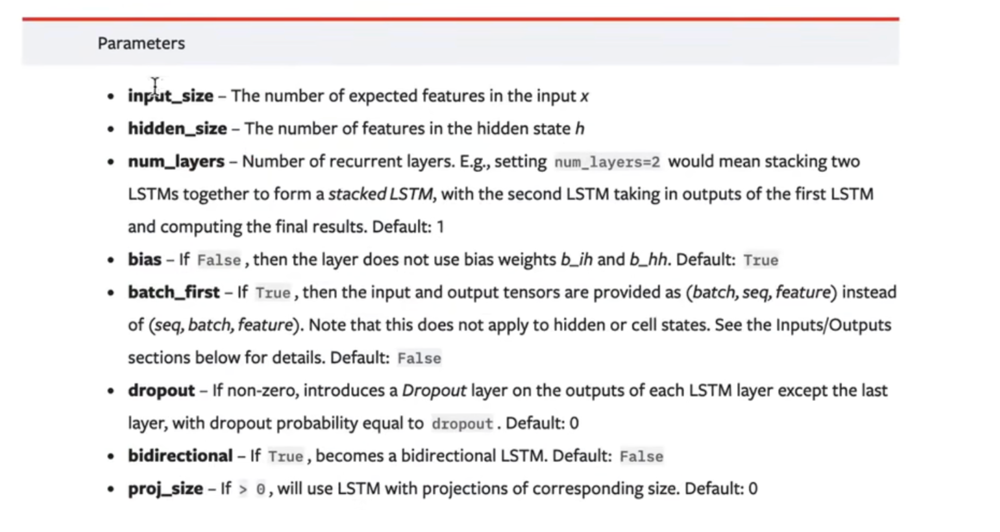
需要实例化LSTM的参数：
input_size：输入序列特征的大小hidden_size： ① LSTM网络 \(h\)的大小 ②hidden_size也是\(c\)的大小num_layers：层数，构建多层的LSTM，多层堆叠起来，前一层的输出\(h_t\)，是作为下一层LSTM的输入\(x_t\)bias：决定了\(b_i\)和\(b_h\)是否可以丢弃batch_first：① 在pytorch中，默认的是batch是放在中间一维的 ② 可以把batch_first设置成true，此时batch就在 第一维dropout以及 双向bidirectional
① 如果要构建双向的话，有forward layer和backward layer
② 最后的状态是由forward layer和backward layer拼接起来的状态
proj_size：最后一个参数，这个参数相当于LSTM网络的变体：LSTMP
LSTM和LSTMP的原理与源码实现¶
LSTM & LSTMP
作用：为了减小LSTM的参数和计算量
因为LSTM的计算量是比较大的，LSTMP通过对\(h_t\)进行压缩，\(h_t\)的维度会变小，整个网络的参数量和运算量 都会变小，有论文表明通过对 \(h_t\) 进行压缩，性能损失不是很大，所以在具体地实验中，可以尝试LSTMP
- 实例化 LSTM 需要传入的参数 \(\uparrow\)
- LSTM input parameters \(\downarrow\)
- LSTM output \(\downarrow\)
LSTM input parameters

1️⃣ input
格式：如果是 batch first=true的话： batch size×sequence length×input size。
2️⃣ (h_0，c_0)
格式：元组
为什么是元组的形式？
为了跟RNN的api保持一致
RNN的api输入就是两个量，LSTM是RNN一个特殊的变体，所以虽然有两个初始状态，用两个更合乎常理，但还是用元组的形式组合起来
两个初始状态分别是
h_0和c_0就是所有带 t-1 下标的，这些符号都需要提供一个初始值
LSTM output

虽然是输出 c_n，但是 h_n = o_n × tanh(c_n)，h_n 与 c_n 是由 c_n 计算来的，即使说 c_n 是中间结果也可以，但 c_n 是 LSTM 的核心
Outputs：output,(h_n,c_n)
-
output：整个模型序列的输出，shape= batch size×sequence length×hidden size，output 反应整个序列的状态输出； -
(h_n,c_n)：元组形式，h_n和c_n，表示最后一个时刻的隐含状态和细胞状态
思考：output,(h_n,c_n)有什么作用？
1️⃣
output
output是一个many to many的建模输入是一个序列，输出也是一个序列，保留序列中的每个元素，比方说，对一个文本的多音字进行预测，或者说词性进行预测，都是
many to many的任务，需要每一时刻的输出2️⃣
h_n
h_n是一个many to one的任务比方说输入一段话到LSTM网络中，最终只取最后一个时刻的状态，并且希望最后一个时刻的状态，就能去表征整句话的特征，然后再对最后一个状态进行分类，或者进行
sequence embedding，这个是many to one的任务，就可以用到h_n
以上：
- 实例化 LSTM 需要的传入参数
- LSTM 算子的 input parameters
- LSTM 的 outputs
RECall BiRNN
1 2 3 4 5 6 7 8 9 10 11 12 13 14 15 16 17 18 19 20 21 22 23 24 25 26 27 28 29 30 31 32 33 34 35 36 37 38 39 40 41 42 43 44 45 46 47 48 49 50 51 52 53 | |
- 有
forward layer还有backward layer
1 2 3 4 5 6 7 8 9 10 11 | |
主要看backward layer
首先对输入进行一个翻转 torch.flip(input,[1]) ，按照时间维度进行翻转，同样喂入到RNN forward函数中，有各种翻转
再把forward output和backward output拼起来，在特征维度上拼起来 就构成了 h_out，也就是双向RNN网络
1 2 3 4 5 6 7 8 9 10 | |
双向GRU和 双向 LSTM 原理也是一样的
实现 LSTM
调用官方 api
1 | |

第 1 步：定义常量
- batch size
- 时间：T
- 输入特征大小：i_size
- h_size：hidden size网络细胞状态的大小
1 2 | |
projection size 也就是投影的大小（暂跳）
1 | |
第 2 步：构建输入 input
喂入到LSTM网络的特征序列
用正态分布初始化 torch.randn 输入
1 | |
第 3 步：初始化初始状态：c_0、h_0
除了输入序列，还需要初始化两个初始状态，分别是c_0和h_0
c_0
假设只考虑一层，c_0的初始状态就是 batch size×hidden size
1 | |
因为
c本身就是一个向量，向量长度就是hidden_size考虑到
batch维度，所以写成batch size×hidden size以上，初始化
c_0
1 | |
h_0
c_0 不需要训练，h_0也是一样的，就是提供了h的初始值
写 batch_size ×hidden_size
先写 hidden_size，暂时不考虑考虑projection size
1 | |
以上，定义好了三个基本的量：输入 input 和初始值(c_0,h_0)

第 4 步：调用官方LSTM API，实例化
1 | |
官方api就是nn.LSTM
1 | |

传入的参数顺序分别是 input size、hidden size、batch first
projection size暂时不用
input_size就是i_sizehidden_size就是h_sizebatch_first设置成true
以上实例化了简单的LSTM layer，定义：lstm_layer
1 | |
第 5 步：LSTM 算子 input parameters
在定义好LSTM layer以后，把输入和初始状态分别传入到LSTM layer中
具体怎么传入参数?
去看api
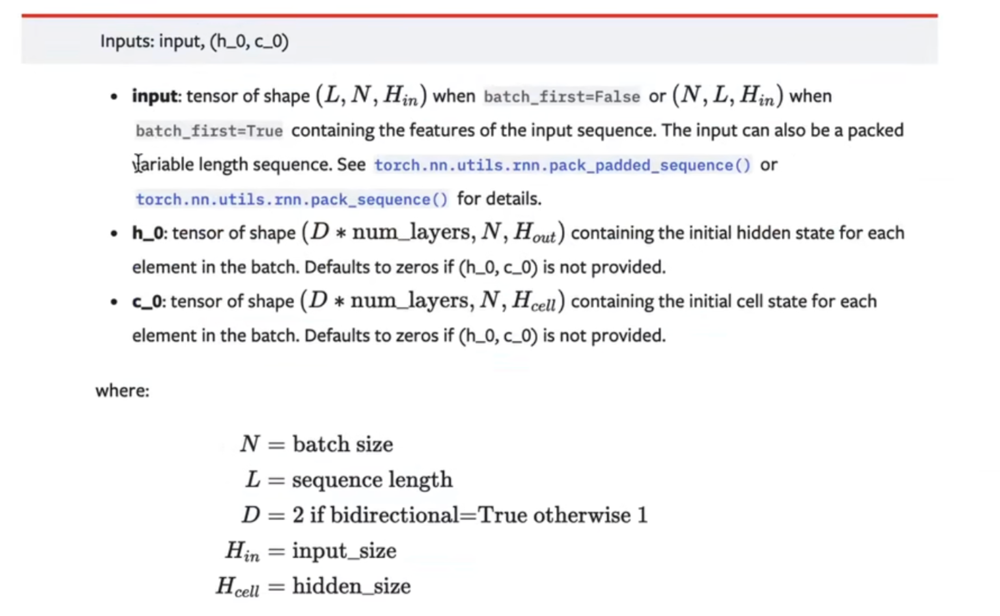
从api可以看到，inputs是 input和一个元组
在元组中，需要传入h0和c0
所以代码写input，然后再写一个元组
1 | |
元组分别传入 h0 和c0
1 | |
那维度是多少呢？官方文档：

h0的维度是D*num_layers×N×H_out
c0也是一样的，首先初始化 N×H_out
1 2 | |
演示的是单向的LSTM网络，是一层的，所以前面的数字在初始化时省掉了
现在先扩一下，扩成 三维
对h0调用unsqueeze函数，在第0维扩一维
c0也同样扩维，变成三维张量，第0维是1
以上是单层单向LSTM 算子，可以得到输出
1 2 3 4 5 6 7 8 9 10 11 12 13 | |
第 6 步：输出 Outputs:output,(h_n,c_n)

这里写输出：
1 2 3 4 5 6 | |
以上调用好了api，接下来打印output
1 | |
改名字，定义h_finall和c_finall，表示最后一个时刻的隐含状态和细胞状态
1 2 | |
第 7 步：打印LSTM 模型参数
官方 api 实现 LSTM，可以调用 LSTM layer 的 named_parameter 函数，打印权重和名字，查看 LSTM 模型参数
1 2 | |

可以看到LSTM的参数名以及具体的张量：
weight_ih_l0对应公式里的 \(W_{ii}\) \(W_{if}\) \(W_{ig}\) \(W_{io}\) 四个 \(W_i\)放到了一个weight_ih里面weight_hh_l0这个参数是公式的 四个 \(W_{hi}\) \(W_{hf}\) \(W_{hg}\) \(W_{ho}\) \(W_h\)拼起来的bias_ih_l0bias_hh_l0
最后两个偏置项，同样是拼起来的，这样直接看张量不清晰，接下来看shape

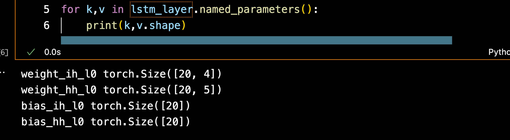
可以看到这个LSTM layer中一共有4个参数；
第一个参数 是 weight_ih_l0 ： 20×4
为什么是 20×4呢？
20是hidden_size，就是5这个维度，然后把4个W拼起来本来每一个是
5行，现在拼成了20行，20就是5×4
4是input_size，因为这个w_ih是跟input相乘的，是对input进行线性变换的参数

解释这里的权重：
\(T=3，input\_size = 4，hidden\_size = 5\)
\(4(4×1) \stackrel{5×4}{\rightarrow} 5(5×1)\)
\(∴ weight\_ih = 5 × 4 堆叠 4 个 → 20×4\)
第二个参数 weight_hh_l0 参数是 20×5的
20是4×5来的5是weight_hh是跟上一时刻的隐含状态进行线性变换的，维度是5- \(∴ 1 个 weight\_hh shape = 5 × 5\)
隐藏层是
linear层：y=wx+b
w的维度就是hidden size×input size这里的
hidden_size就是5，input_size是4
第三个、第四个参数：两个bias
bias_ih和bias_hh都是20，20是4×5来的，就是有4个bias（4个bi和4个bh），把这四个拼起来，每一个长度都是20的
以上是LSTM不带projection的实现
1 2 3 4 5 6 7 8 9 10 11 12 13 14 15 16 | |
OUT：
1 2 3 4 | |
可以根据这些参数，来自己写一个LSTM模型
自定义 LSTM 实现¶
1 | |
根据上面的参数、h0、c0、input，可以自己写一个LSTM
1 2 | |
第 1 步：函数签名
首先思考这个 LSTM 模型，需要哪些输入呢？
第一个：需要传入的 input
第二个： 元组形式的 initial states
第三个： 权重和偏置，包括W_ih、W_hh、b_ih、b_hh
以上是LSTM forward的签名
1 2 3 4 5 6 | |
如果带 projection的话，后面还需要再加参数
第 2 步：拆解initial states： h0和c0
1 | |
第 3 步：拆解 input.shape
通过input shape得到batch size、时间T，input size
得到时间T，进行for循环，不断的迭代，不断的运算
1 | |
以上是input_size
还有h_size
h_size怎么得到呢？
h_size根据W的维度 来确定比如
weight_ih，除以4就好了，因为是4个W拼起来的
1 | |
第0维除以4，就是每一维的hidden_size
第 4 步：for 循环初始化
把h0和c0换名字：prev_h 和 prev_c
因为会在 for循环中，不断的更新 prev_h和prev_c
1 2 | |
把每一时刻的h和c当做下一时刻的 prev_h和prev_c
第 5 步：output size
另外还有一个 size 叫做 output size，也就是 输出的状态大小 就是 hidden size
1 | |
以上是初始化output
在写神经网络或者循环神经网络：
（1）首先初始化矩阵；
（2）然后对矩阵进行填充，矩阵的大小跟输入特征大小是一样的
输入序列大小：bs×T×input_size
batch size和T维度是不变- 然后特征维度
input size改成output size
以上完成 output 的初始化
1 | |
第 6 步：for 循环
完成初始化以后，接下来对时间进行遍历
LSTM就是每一时刻都在对上一时刻的\(c\)和 \(h\)进行更新，for循环实现这个过程，对每一时刻进行运算，循环的步数就是大T步
1 | |
在每一个循环的开始：
- 需要拿到当前这一时刻的\(x\)，可以通过\(input\)拿
因为\(input\)这个维度就是
batch size×T×input size，当前时刻的输入拿到t这一维度就好，就是当前时刻的输入向量
1 | |
接下来，根据公式进行计算：
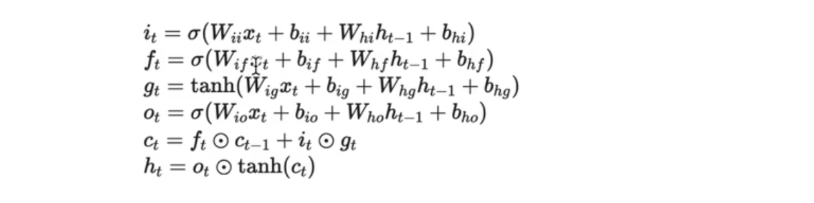
\(weight_{ih} = [w_{ii},w_{if},w_{ig},w_{io}]'\)
- \(\mathrm{w_{ii}}\) ： 5 × 4
- \(\mathrm{weight_{ih}}\) ：20×4
公式的代码实现逻辑：
- 首先计算 \(W × x\)，再计算 \(W × h\)
先把 大的一块 算出来
拼起来的
W分别与x和h进行一个相乘，考虑到batch，需要运用的带batch的矩阵相乘；
- 明确
W_ih和W_hh的维度是什么：
1 2 | |
-
w ih是4倍的hidden size×input size -
w hh是4倍的hidden size× hidden size
以上 是两个权重的维度
1 2 | |
- 计算 \(w_{ih} \cdot x\)
思考： \(x\)的维度是多少呢？ batch size×input size
1 | |
分析：
🐾 \(x\) 是带 batch的，但是\(w\)是不带batch的
🐾 所以首先要对 w 扩维度，把 batch 维度扩出来，batch维放在开始，所以扩 0维
1 2 | |
需要batch size(bs)个，所以用.tile函数对第0维复制bs倍，后面两个维度不变，把这个变量叫做 batch_w_ih
1 | |
以上实现了权重的扩维，变成了 三维
同样w hh也是 一样的，先扩一个 batch维度，然后tile复制一下，定义为batch_w_hh
1 | |
维度变成了 \(\mathrm{bs × 4倍的hidden\_size × hidden\_size}\)
1 2 | |
以上对权重进行 扩维，扩维以后：
- 当前的
batch_w_ih形状是 \(\mathrm{bs × 4倍的hidden\ size×input\ size}\) - 当前的
输入向量 x的形状是 ： \(\mathrm{batch\ size×input\ size}\)
让这两个矩阵进行 bmm 的相乘，也就是batch matrix multiplication
- 那就要保持
batch这个维度是相同的 - 后面的两个维度 要满足 矩阵乘法的基本规则：
第一个矩阵的列数 ＝ 第二个矩阵的 行数
所以要对 x 进行扩维，同样对x的 第三维 增加一个维度
1 | |
计算 w_times_x：调用一下 torch.bmm函数：
- 首先传入
batch w ih
1 | |
- 然后传入
x，并对x进行扩维
在
-1维扩一维 ，变成 \(\mathrm{batch\ size × input\ size ×1}\)
- 得到乘法的结果
w_times_x：
1 | |
相乘 以后的维度是多少呢？
- 相乘以后的维度： \(\mathrm{batch\ size× 4倍的hidden\ size × 1}\)
- 最后的
1维度 不要，把1这个维度去掉：
1 | |
以上 把 1 这个维度去掉了，形状是 batch size × 4倍的hidden size
以上是 w times x 的计算过程

实现完 w_times_x，具体来说就是 \(W_{ii}x_t\) 、 \(W_{if}x_t\) 、 \(W_{ig}x_t\) 、 \(W_{io}x_t\)
还有 w_times_h，就是LSTM网络中后四项
实现思路是一样的，复制下来改成
-
w_hh -
prev_h -
因为是跟
h_{t-1}进行 线性组合，所以也要写成h_prev - 同样也要把
维度变成二维的
1 2 3 | |
以上算出 w_times_h
最后把名称改成 h_prev更好，因为是跟上一时刻的 hidden state 进行线性组合
1 2 3 | |
接下来，分别算出 输入门、遗忘门、cell和输出门
也就是 i、f、g、o
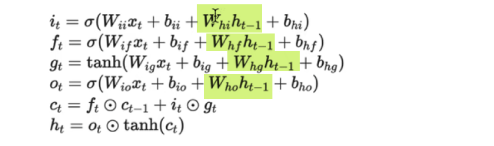
1 | |
首先计算\(i_t\)，根据公式：
\(i_t = \sigma(W_{ii}x_t + b_{ii} + W_{hi}h_{t-1}+b_{ii})\)
i_t 是 \(Wx\)的第一部分结果+\(b\)+\(Wh\)的第一部分结果+\(b\)
（1）首先 w_times_x的第一部分结果取出来
（2） w_times_x的结果是 batch size ×4倍的hidden size
batch size这一维度全部拿出来hidden size这一维 只拿第一部分的hidden size
w_times_x 是一个大的拼起来的结果，目前只需要取前 \(\frac{1}{4}\)：
1 | |
后面 w_times_h_prev也是取前 \(\frac{1}{4}\) ：
1 | |
还有两个偏置\(b_{ih}\)和\(b_{hh}\)也是一样的，只取 前 \(\frac{1}{4}\) ：
1 | |
最后还有非线性激活函数 \(\sigma\)，在前面加上 torch.sigmoid
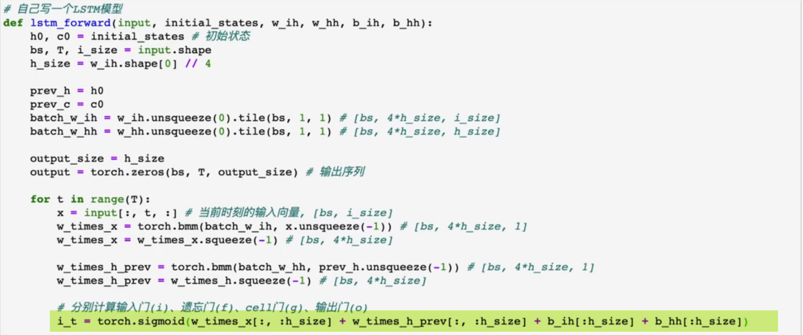
以上是 \(i_t\)
输入门的计算= w乘以x的前四分之一部分， w乘以h prev也是前四分之一部分，然后两个bias加起来，经过一个 非线性激活函数 sigmoid 就得到 输入门
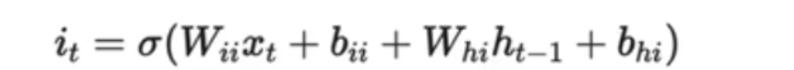
接下来 遗忘门
遗忘门也是类似的，同样也是 sigmoid，直接复制
但是遗忘门不是前四分之一
1 2 3 | |
而是前四分之一 到二分之一的部分：
1 | |
即，
1 | |
hidden size 到 2倍的hidden size
以上是遗忘门

接下来，细胞门 $g_t $：
细胞门\(g_t\)也是类似的，只不过当前 sigmoid 替换成了tanh函数

所以继续复制下来 ，再改，就可以计算出细胞状态 \(g_t\) ：
1 | |
gt是二倍的hidden size 到 三倍的 hidden size这个区间
同样后面的偏置也是一样的
换一个区间，然后 非线性激活函数改成 tanh函数
最后是\(o_t\)， 输出门：
-
tanh函数换成sigmoid函数 -
最后区间是最后的四分之一，可以写成
3倍的hidden size到4倍的hidden size
1 | |
- 或者直接
w_times_x[:,3*h_size:]：3倍的hidden size，4可以省略
以上是所有的 i、f、g、o


写完了 \(i、f、g、o\)，接下来写细胞状态 \(c_t、 h_t\)
\(c_t\)怎么写呢？
\(c_t\) 直接是元素相乘，实现的时候不用 \(c_t\)，用\(\mathrm{prev_c}\)
因为现在用
for循环迭代要保证下一时刻\(\mathrm{prev_c}\)的量是存在的，用\(\mathrm{prev_c}\)表示\(c_t\)
那\(prev_c\)= \(f_t× c_{t-1}加上 i_t×g_t \iff f_t×prev_ c + i_t× g_t\)
以上是对 \(prev_c\) 的更新
1 | |
有了 prev_c以后就能计算 prev_h

-
\(prev_h\) 就是当前时刻 LSTM的输出
-
按照公式 就是 \(输出门 × tanh 细胞状态\)
1 | |
以上是对 \(c\)和 \(h\) 的更新
有了 \(h\)以后，就可以对输出矩阵也更新一下，把每一时刻的隐藏层状态存储，存到 output 矩阵中：
1 | |
以上是所有自定义 LSTM 函数的实现
现在返回：
- 第一个返回值是 输出序列
- 第二个返回值是两个状态 构成的元组，这两个状态分别是
最后一个时刻的输出和最后一个时刻的细胞状态
1 | |

以上是不带 projection的自定义LSTM
接下来测试
测试就是把 LSTM layer的4个参数取出来，然后喂入到自定义 LSTM函数中，然后对比结果
（1）实例化LSTM 算子，传入input parameters
首先把函数签名复制下来：

input还是inputinitial state就是h0和c0，就是之前初始化的h0和c0
1 | |
w_ih就用之前pytorch中实例化的lstm layer的参数拿出来

就是lstm_layer.参数

即，
1 | |
w_hh也是一样的，后面还有两个偏置，最后实例化的自定义 LSTM 函数：
1 2 3 4 5 6 | |
实例化好自定义 LSTM 算子以后，定义变量接收输出
复制前面的变量名，加后缀 custom

加后缀 custom，表示自定义的LSTM
1 2 3 4 5 6 7 | |
接下来对比前面的 output 和自定义实现的 output_custom，查看是不是一致用torch.allclose()
1 2 3 | |
输出三个True
LSTM 全部代码¶
1 2 3 | |
1 2 3 4 5 6 | |
1 2 3 4 5 6 | |
OUT：
1 2 3 4 | |
1 2 3 4 5 6 7 8 9 10 11 12 13 14 15 16 17 18 19 20 21 22 23 24 25 26 27 28 29 30 31 32 33 34 35 36 37 38 39 40 41 42 43 44 | |
1 2 3 | |
OUT：
1 2 3 | |
LSTMP¶
要解决的问题：
- 什么是
projection呢 - 如果要写
projection，需要怎么改造？
官方 api实现 LSTMP¶
注意看参数变化
调用官方 api 需要加一个量 proj_size
proj size 等于多少呢？
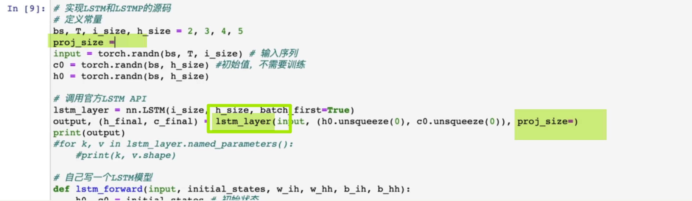
一般 projection size比hidden size小
即要对hidden state进行压缩， 压缩肯定是要往小的维度压缩
如果hidden size等于5的话，那projection size就设置成3，比hidden size小一点就好，以上实现了 projection layer

现在再来看 lstm layer的参数输出
传入proj size以后，还要改变h0
因为如果
LSTM带了projection的话则
h实际上是要压缩的，维度不再是h_size；而是projection_size，所以h_0也要改一下
projection的作用实际上就是对 h0进行一个压缩，接下来查看模型参数：
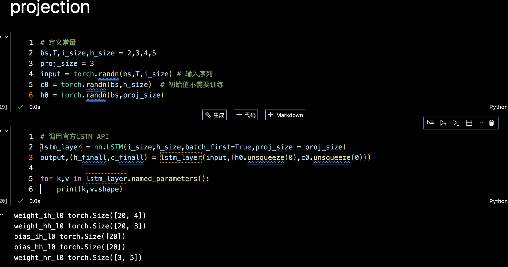
相比于lstm，lstmp多了一个结果：weight_hr_l0 ， 这个参数就是对 hidden state 进行压缩
hidden state的大小实际变成了3，不再是5
接下来，打印output.shape和h_finall.shape、c_finall.shape
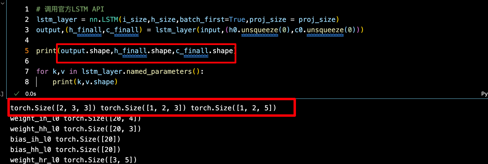
可以看到lstmp的output shape是2×2×3的，不是 2×3×5 ，因为对输出进行了压缩
h_finall和c_finall分别是 1×2×3 和 1×2×5的
可以看到 h_finall的大小也变成了3，但是c的大小仍然是5
理由：只对输出进行了压缩，不会对细胞状态进行压缩
以上是projection的原理，
自定义 LSTMP 代码实现¶
接下来修改自定义函数：
多了一个projection参数，所以签名中加入w_hr 并且设置默认为None

- 如果是
None的话，就是一个普通的lstm - 如果不是
None就是带有projection的
新加入参数以后，后续需要做哪些修改呢？
首先对output size做一个判断，如果有projection size，output size 就不是 h size
1 | |
要判断，首先需要找到projection size，简写为p_size：
1 | |
它是w_hr的第0维

红框就是projection size，然后 output size等于 p_size
1 | |
如果 else的话，output size就等于 h size
1 2 | |
全部的代码：

以上是引入projection以后做的改变
另外 w_hr，同样要引入batch的维度
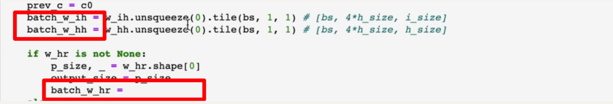
同样引入batch的维度，但是这时候，形状就是 bs×p_size ×h_size
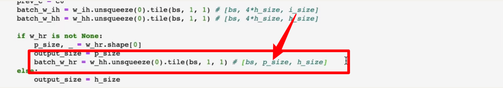
这是对output size做的变更
因为引入了
projection，所以output大小是变小了
那么接下来要变更哪里呢？
- 现在引入了
projection之后，这里的hidden_size是变小的，已经变成了projection_size - 也就是说
w_times_h_prev大小仍然是：bs×4倍的hidden size
但它是怎么得到呢？
- 它是 \(batch\_w\_hh\) (
bs×4倍的hidden size再乘以p size)，再跟 \(prev\_h\)(p_size)进行相乘，然后p_size这个维度就消掉了 - 最终，得到 \(\mathrm{batch\_size × 4*hidden\_size}\)

batch_w_hh.shape = torch.Size([2, 20, 3])prev_h.shape = torch.Size([2, 3])-
w_times_h_prev.shape = torch.Size([2, 20, 1]) -
h_size = 5 bs = 2proj_size = 3
如果引入了 projection，需要在得到的prev_h这里，进行压缩

现在 prev_h这里，大小是 bs×h_size
但输出的h 要是 p_size的，所以 要进行一个压缩

同样，如果 w_hr不是None的话，就要做projection，要对 prev_h进行一个压缩
压缩原理仍然是用，矩阵相乘的算法
用压缩矩阵 w_hr跟prev_h相乘，需要对 prev_h进行扩一维，最后一个维度扩一维
1 2 | |
这样 prev_h的维度就变成了 bs×p_size×1
把这个1，最后再去掉
1 2 3 4 | |
以上实现了projection
lstm projection的原理，会对输出状态进行一个压缩，然后整个 output的维度就变小了，另外引入projection，整个计算量都是变小的

- batch_w_hh：
batch size× 4倍的hidden size× hidden size
→ 变成了 4倍的hidden_size × p_size
-
所以它的参数数目是降低的，运算量是降低的
-
另外
prev_c的维度是没有变得，仍然是hidden_size -
但是
prev_h的维度是降低的
以上在自定义的 lstm forward 引入了 projection
接下来继续测试，并且把 weight_hr_l0传入进来，得到带有projection的自定义函数
接下来进行测试，查看结果是否一致。
lstmp 简单来说：
- 对输出的状态，也就是
prev_h进行压缩，使得整个LSTM网络，运算量和参数量都有减小- 主要是
w_hh权重的维度是有降低的，运算量也是减少的
LSTMP的全部代码¶
1 2 3 4 5 6 | |
1 2 3 4 5 6 7 8 | |
1 2 3 4 5 6 | |
1 2 3 4 5 6 7 8 9 10 11 12 13 14 15 16 17 18 19 20 21 22 23 24 25 26 27 28 29 30 31 32 33 34 35 36 37 38 39 40 41 42 43 44 45 46 47 48 49 50 51 52 53 54 55 56 | |
1 2 3 | |
1 2 3 | |